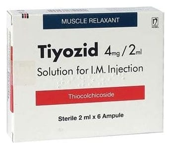

Tiyozid 4 mg/2 ml I.M. Ampul

Ne için kullanılır
KT · Bölüm 1TİYOZİD, 2 ml’lik ampul formunda olup; sarı renkli, parçacık içermeyen berrak çözeltidir ve 4 mg tiyokolşikosid etkin maddesini içerir. Her kutuda 2 ml’lik 6 adet ampul bulunmaktadır.
TİYOZİD esas olarak kas gevşetici etkinliğe sahiptir. TİYOZİD, yetişkinlerde ve 16 yaştan itibaren ergenlerde ani ortaya çıkan omurilik kaynaklı ağrılı kas kasılmalarının tedavisinde kullanılır.